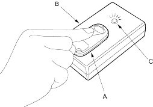

- If the doors unlock or lock with the transmitter, but the LED on the transmitter does not come on, the LED is faulty; replace the transmitter.
- If any door is open, you cannot lock the door with the transmitter.
- If you unlocked the doors with the transmitter, but do not open any of the doors within 30 seconds, the doors relock automatically.
- The doors do not lock or unlock with the transmitter if the ignition key is inserted in the ignition switch.
Using a keyless entry checker, (07MAJ-SP00300):
Put the transmitter (A) on the keyless entry checker (B) and press the button.
- If the ray indicator light (C) does not come on, check for:
- a dead or low battery.
- faulty transmitter.
- If the ray indicator light comes on, the transmitter is OK.
NOTE: When the transmitter battery was replaced, aim the transmitter at the receiver and press the transmitter button six times. The receiver is located behind the centre lower panel. Confirm you can hear the sound of the door lock actuators when you press the sixth time.

The codes of up to three transmitters can be read into the keyless receiver unit memory. (If a fourth code is stored, the code which was input first will be erased.)
NOTE: It is important to maintain the time limits between the steps.
- Turn the ignition switch ON (II).
- Within 1 to 4 sec., push the transmitter lock or unlock button with the transmitter aimed at the key less receiver unit.
- Within 1 to 4 sec., turn the ignition switch OFF.
- Within 1 to 4 sec., turn the ignition switch ON (II).
- Within 1 to 4 sec., push the transmitter lock or unlock button with the transmitter aimed at the key less receiver unit.
- Within 1 to 4 sec., turn the ignition switch OFF.
- Within 4 sec., turn the ignition switch ON (II).
- Within 1 to 4 sec., push the transmitter lock or unlock button with the transmitter aimed at the key less receiver unit.
- Within 1 to 4 sec., turn the ignition switch OFF.
- Within 4 sec., turn the ignition switch ON (II).
- Within 1 to 4 sec., push the transmitter lock or unlock button with the transmitter aimed at the key less receiver unit.
- Confirm you can hear the sound of the door lock actuators. Within 1 to 4 sec., push the transmitter lock or unlock button again.
- Within 10 sec., aim the transmitters (up to three) whose codes you want to store at the receiver and press the transmitter lock or unlock buttons.
Confirm that you can hear the sound of the door lock actuators after each transmitter code is stored. - Turn the ignition switch OFF and pull out the key.
- Confirm proper operation with the new code(s).